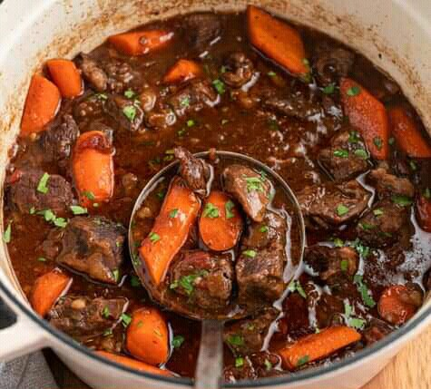

Beef stew recipe

Here is a simple recipe on how to prepare beef stew.
You will need;
Ingredients
- 1kg beef
- 3 potatoes, chopped
- 1 chopped onion
- 2 carrots
- 2 tbps. cooking oil
- 2 tbsp. plain flour
- 2 tbsp. tomato paste
- Beef stock cubes crumbled
Instructions for preparing
- Cut your beef into pieces and wash.
- Add 2 tbsp of cooking oil in a pot and heat.
- Add the beef pieces one by one and sprinkle some salt.
- Brown the beef on each side and remove the pot.
- Put the chopped onion and seasoning in the pot and stir for about 3 minutes.
- Add the tomato paste and mix well.
- Add the beef and potatoes with hot water and cook for about 20 minutes.
- The n stir in 2 tbsp of plain flour, 2 tbsp of tomato paste and crumbled beef stock cubes.
- Cook until the meat is tender and bring to a gentle simmer.
- The beef stew should have a thick gravy by now.
- Ready to serve.
Can be enjoyed with;